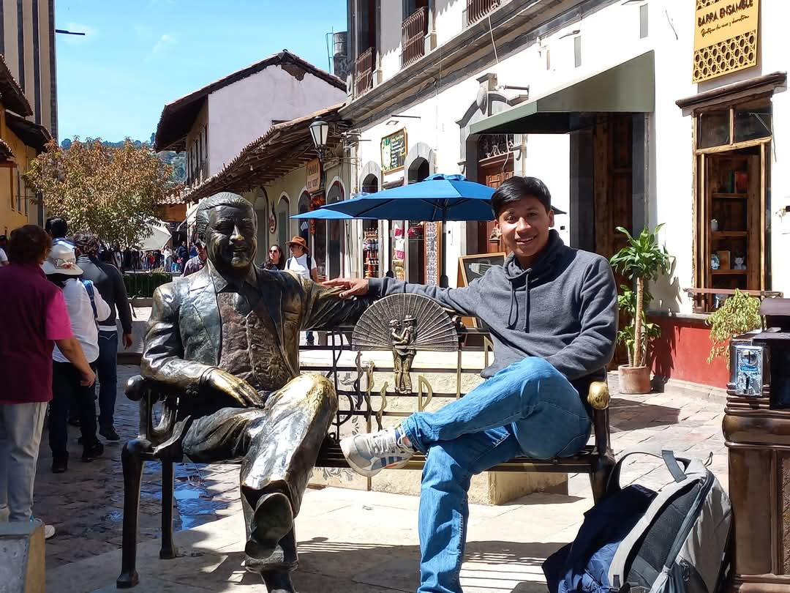

¡Bienvenido a mi página sobre mis hobbies!
Sobre mí
Hola, me llamo Walter Villegas Mendoza, tengo 22 años y estudio Administración de Negocios Internacionales en la Universidad Veracruzana en la región de Xalapa. Actualmente estoy cursando la experiencia educativa de Proyecto Web en el cual estamos aprendiendo a usar codigos html y css para crear nuestras paginas y sitios web.
Soy una persona que le gusta mucho hacer ejercicio y jugar futbol, me gusta comer y escuchar musica en mis tiempos libres, además de jugar videojuegos con mis amigos o juegos online como FIFA o algún battle royale. Me considero una persona muy tranquila y amigable, me gusta ayudar a los demas y esforzarme en las cosas que tengo que hacer.
En esta página te voy a compartir algunos de mis hobbies favoritos. ¡Espero que los disfrutes tanto como yo!
